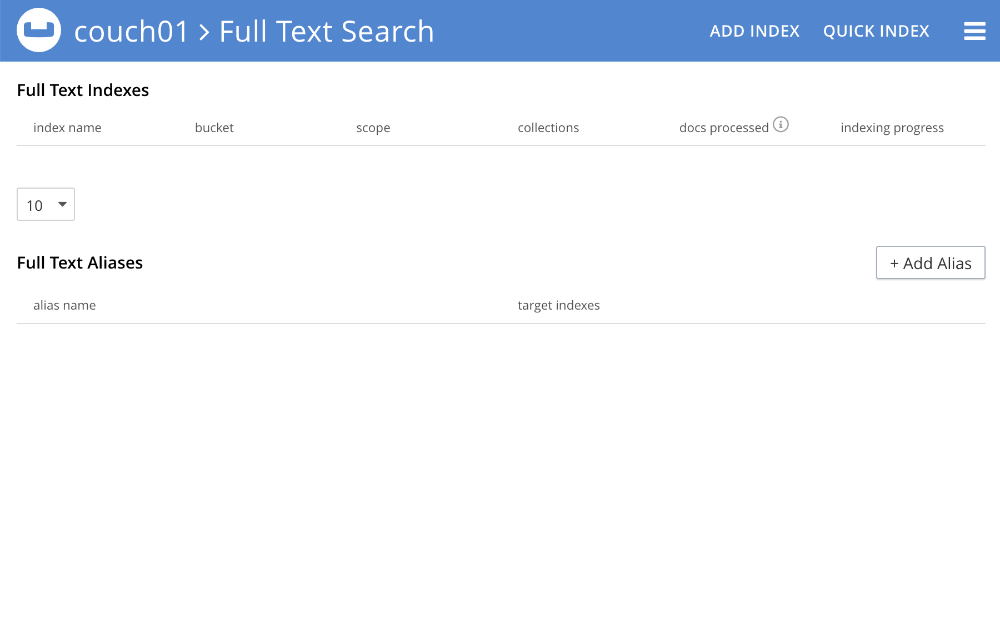
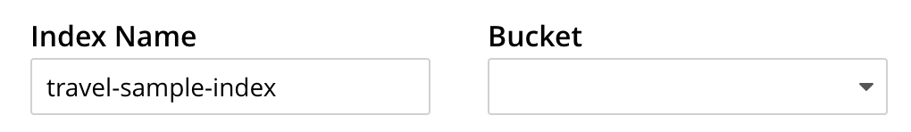
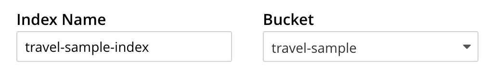
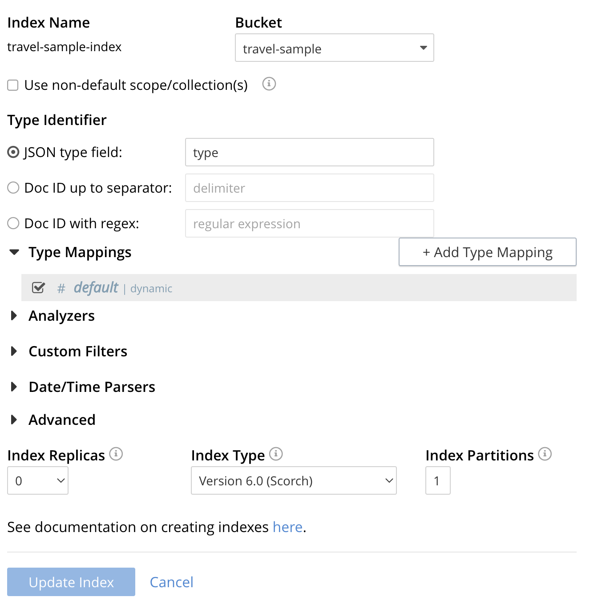
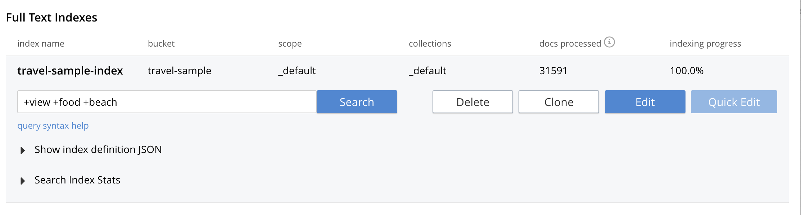
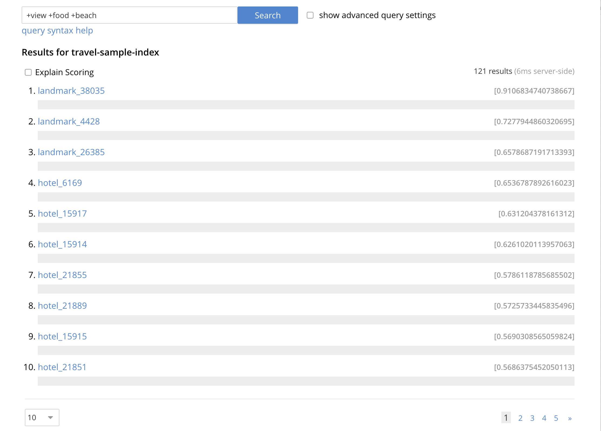

Classic Editor
The classic editor is the most advanced tool where users can directly configure the index mapping with all capabilities.
You can build the exact same index via the command line use the REST API, refer to Creating a Legacy Index via the REST API.
This section introduces index creations via a step by step walk through using the classic editor. The reader should be already familiar with the basic concepts of full-text search
This example Creating a Legacy Index provides a simple introduction to using Search, however it is not optimized nor does it expose many useful features that the Search service supports. This example only runs on the _default scope/collection (created when migrating bucket data into collections) and should be considered a legacy mode. This example is compatible with the pre collections bucket based paridigm.
Note a legacy index can only work on just one keyspace <bucket_name>._default._default.
Creating a Legacy Index
This section describes creating an Index on a bucket’s _default scope/collection. This collection is created when upgrading from Buckets to Collections.
To create a basic Search index on the _default collection, through the Classic Editor:
-
Access the Couchbase Web Console > Search page.
 -
Click the Add Index link in the upper right of the Couchbase Web Console > Search page.

-
To define any index on which Full Text Search a unique name for the index in the Index Name field, on the upper-left. Note that only alphanumeric characters, hyphens, and underscores are allowed for index names and the first character of the name must be alphabetic.
Enter travel-sample-index as the name of the Search index you are creating in the Index Name text-box.
 -
Select the bucket travel-sample from the Bucket pull-down menu.
Use the pull-down menu provided for the Bucket field, on the upper-right, and select a bucket that you are allowed to access to via the cluster’s RBAC settings.
 -
Save your index, left-click on the Create Index button near the bottom of the screen.
This is all you need to specify in order to create a basic index for test and development. No further configuration is required.

-
If you subsequently Edit your Index it should look like the following:

Test the Legacy Index with a simple query
In the Couchbase Web Console > Search page.
-
Click on the index you just created (named "landmark-content-index") to expand the Index’s controls.
-
In the text area of the search box enter +view +food +beach this will search on all three keywords
-
Click on the blue Search button. You will get documents from both type hotel and type landmark
 -
Verify you have some results

| Creating default indexes as above indexes across all fields is not recommended for production environments since it creates indexes that may be unnecessarily large, and therefore insufficiently performant. |
Advanced Index Settings and Other Features in the UI
The complete range of available options for creating Search indexes for any production environment is covered here: Creating Indexes.
Once you hit the Create Index button you will return to the Couchbase Web Console > Search page (note, if you tested any index just access the Couchbase Web Console > Search page again).
At this point, you are returned to the Full Text Search screen.
A new row now appears for the index you have just created. When left-clicked on, the row opens or expands as follows:
Index Build Progress
Once the new index has been built, it supports Full Text Searches performed by all available means: the Console UI, the Couchbase REST API, and the Couchbase SDK.
Statistic: docs processed
The percentage figure appears under the indexing progress column and represents the number of documents present in the index.
-
On an initial build this may take a while to process all the documents.
-
A mutation to an existing document will not increment this count (unless new items are added).
Statistic: indexing progress
The percentage figure appears under the indexing progress column and is incremented in correspondence with the build-progress of the index. When 100% is reached, the index build is complete.
-
However, search queries will be allowed as soon as the index is created, meaning partial results can be expected until the index build is complete.
-
If later mutations com in the percentage may actually jump around as batches of documents are processed.
-
If one or more of the nodes in the cluster running data service goes down and/or are failed over, indexing progress may show a value > 100%.
Show Index Definition
This expandable section shows the JSON document that describes the current index configuration, as created by means of the user interface.
A checkbox [ ] Show curl command to modify this index definition is set will wrap the index definition with a command line cURL syntax.
You can copy either variant (the cURL mode) and the definitions can be used via the Search REST API or any Couchbase SDK.
Using the Index Definition Preview
The Index Definition Preview appears to the right-hand side of the Add Index (or an Edit Index) screen.
Following index-definition, the upper portion may appear as follows:
This preview (like the Show Index Definition JSON from the main Search page) consists of the JSON document that describes the current index configuration, as created by means of the user interface. By left-clicking on the copy to clipboard tab, the definition can be saved.
These definitions can be used via the Search REST API or any Couchbase SDK.
Advanced Index Configuration Options
The complete range of available options for creating Search indexes for any production environment is covered here: Creating Indexes.